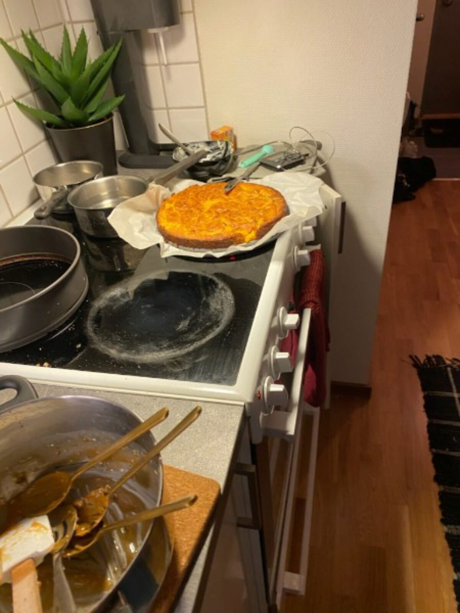
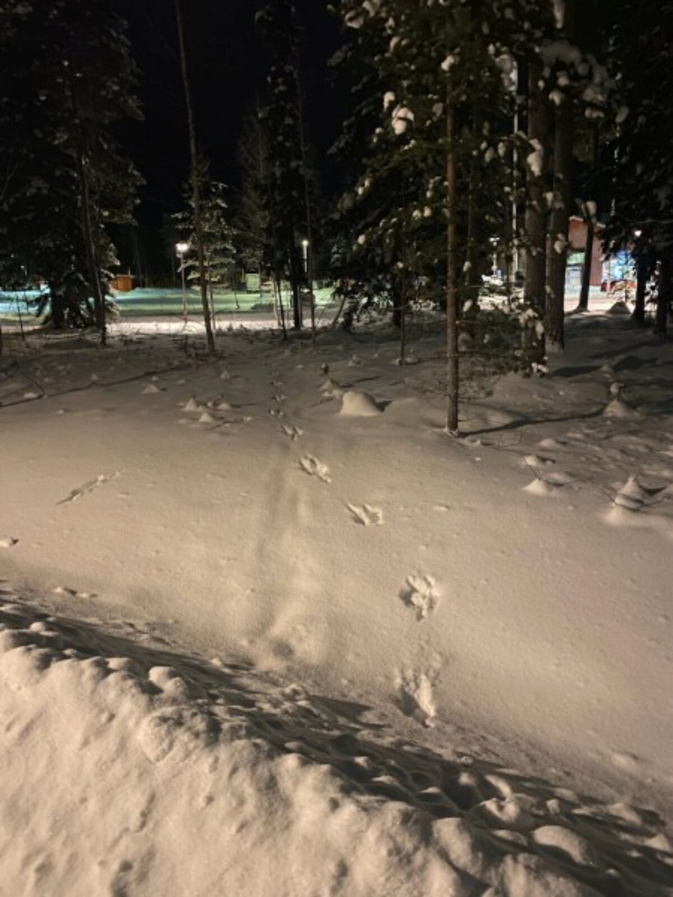
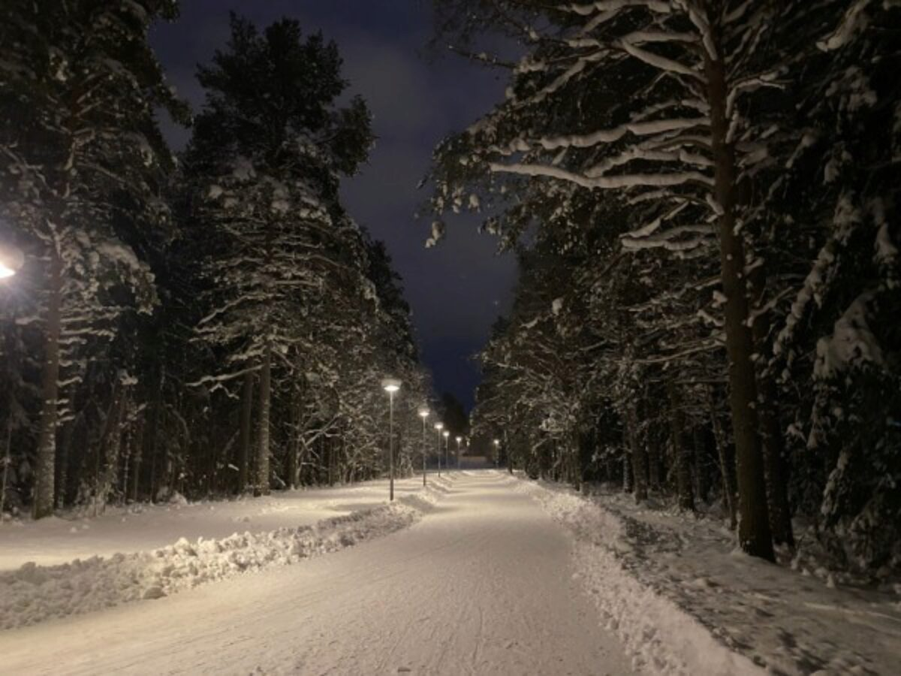

Spännande med djurspår, tycker Rudolf
det ser man ju inte så ofta

Ha en bra tisdag!
Gårdagens chokela' var
Bea bakade knäck, och jättegod
vit choklad, och hallongrädde!
Rudolf upptäckte fler mystiska spår på hemvägen
Spännande med djurspår, tycker Rudolf
det ser man ju inte så ofta
Fina vintervägar
Åååh, önskar jag hade en egen släde, tänker Rudolf
Då hade jag susat fram